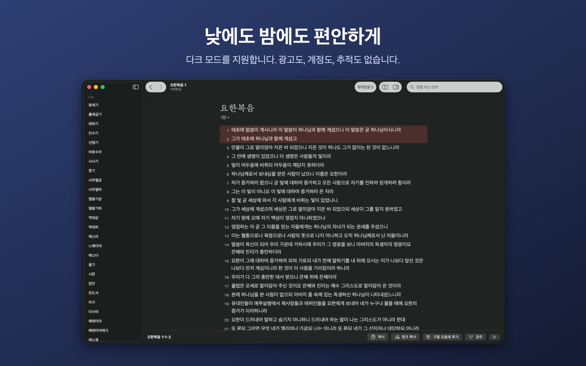
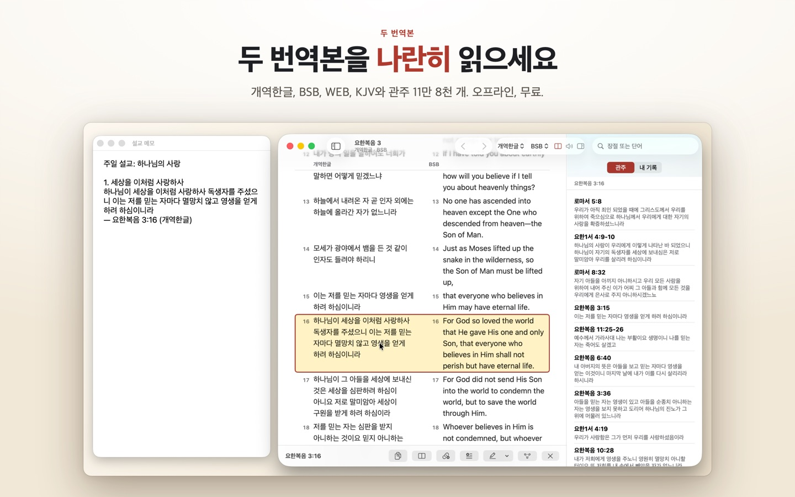
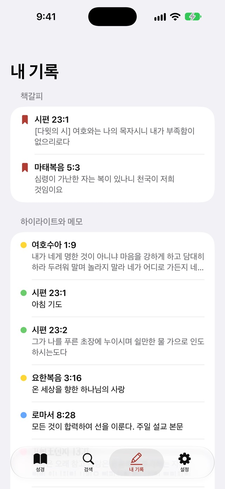

Mac · iPhone · iPad
성경 구절을,
글 쓰는 곳 어디서나.
Pages, 한글, Word, Obsidian, 메일을 쓰다가 ⌃⌥B를 누르고 “요 3:16; 롬 8:28”을 입력한 뒤 Return을 누르세요. 출처가 붙은 본문이 복사되어 바로 붙여 넣을 수 있습니다.
App Store 출시 예정
읽기, 검색, 대역, 하이라이트·메모, 소리 내어 읽기는 무료입니다. Mac에서는 빠른 찾기 복사가 Pro 기능이고, iPhone·iPad에서는 Pro로 광고를 없앱니다.
macOS 14 이상 · iOS·iPadOS 17 이상 · 한국어와 영어


시간을 아껴 주는 세 가지
어느 앱에서든 빠른 찾기
장절 하나나 여러 개(“시 23; 고전 13:4-7”), 또는 단어를 입력하세요. Return을 누르면 고른 서식으로 복사됩니다.

조용한 리더, 두 번역본
두 번역본을 절마다 나란히 읽고, 본문 옆에서 관주를 펼치고, 다시 열면 읽던 절에서 시작합니다.
준비하며 모아 두기
설교, 공과, 성경공부에 쓸 구절을 구절 모음에 모으고, 카드를 문서로 끌어다 놓거나 한꺼번에 복사하세요.
말씀으로 글을 쓰는 사람을 위해
쓰는 방식 그대로 복사
본문 뒤 출처, 출처 먼저, Markdown 인용, Obsidian 콜아웃, 본문 뒤 괄호 출처, 슬라이드용 한 줄에 한 절.
하이라이트·메모·책갈피
다섯 가지 색 하이라이트, 어느 절에나 남기는 메모, 자주 펴는 곳은 책갈피로. 메모는 절에 붙어 어느 번역본에서나 보입니다.
소리 내어 읽기
기기에 들어 있는 음성으로 장을 오프라인에서 읽고, 읽는 절을 표시하며 따라갑니다. 장이 끝나면 다음 장으로 이어집니다.
노트와 원고
링크 복사로 메모, Pages, Obsidian에서 그 구절을 다시 엽니다. 설교 개요를 선택하면 서비스 메뉴가 장절마다 그 아래에 본문을 넣습니다.
관주
OpenBible.info의 11만 8천 개 연결. 절을 선택하면 관련 구절을 미리 보고 바로 이동합니다.
세피아·다크·명조
오래 읽을 때를 위한 읽기 테마와 명조체, 필요한 만큼 키울 수 있는 글자 크기.
Mac에서는 키보드로
⌘F 검색, ↑↓ 절 이동, ←→ 장 이동, ⌘L 장절로 이동. 모든 명령이 메뉴에 있습니다.
오프라인, 개인정보 보호
따로 만드는 계정도, 추적도 없습니다. 모든 본문이 기기에 있어 인터넷 없이 동작하고, 기록은 내 iCloud로만 동기화됩니다.
iPhone과 iPad에서도
같은 본문, 검색, 관주, 하이라이트와 메모. 절을 눌러 복사·공유·표시하고, iPad에서는 두 번역본을 나란히 봅니다. iPhone·iPad에서는 본문 아래 작은 배너와 함께 무료이고, Pro로 광고를 없앨 수 있습니다.
하이라이트·메모·책갈피는 내 iCloud를 통해 Mac, iPhone, iPad 사이에 동기화됩니다. 설정에서 끌 수 있습니다.


읽기는 무료, 도구는 한 번 결제
무료
Mac은 광고 없음 · iPhone·iPad는 작은 배너
- 읽기와 본문 검색
- 두 번역본 대역
- 관주
- 하이라이트·메모·책갈피
- 소리 내어 읽기, 테마, 리더에서 복사, 구절 링크
Bible Anywhere Pro
₩6,500 한 번 · 구독 없음 · 가족 공유
- Mac: 어느 앱에서든 빠른 찾기로 복사
- Mac: 서비스 메뉴로 본문 넣기, Markdown 내보내기
- iPhone·iPad: 광고 제거
- 한 번 구입으로 Mac·iPhone·iPad 모두
시작할 때 결제 화면이 없습니다. Pro 창에는 늘 닫기와 구입 복원이 있습니다.
수록 본문
- 개역한글 (1961)
- Berean Standard Bible (BSB)
- World English Bible (WEB)
- King James Version (KJV)
네 번역본 모두 퍼블릭 도메인입니다. 개역개정, 새번역, NIV, ESV처럼 저작권이 있는 번역본은 출판사 허락이 필요해 들어 있지 않습니다.
내 기록은 내 기기에
따로 만드는 계정이 없습니다. 하이라이트·메모·책갈피는 기기에, 그리고 iCloud 동기화를 켜 두면 내 Apple 계정만 읽을 수 있는 개인 iCloud에 저장되며, 개발자는 볼 수 없습니다. Mac 앱에는 광고도 추적도 없습니다. iPhone·iPad에서는 Google AdMob 배너가 무료판을 지탱하며, 추적 허용을 요청하지 않습니다. Pro로 광고를 없앨 수 있습니다.